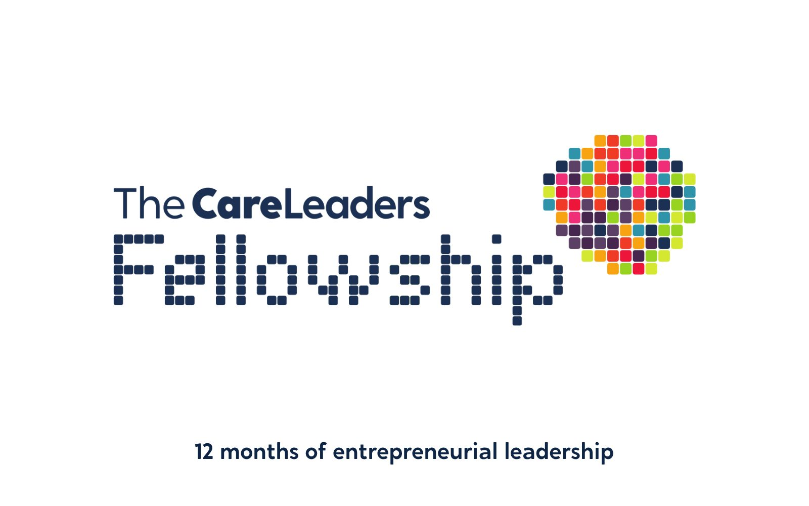

The Five S Framework: lived experience leadership trainingFrom care leaver to care leader.
Training on the Five S Framework that helps care-experienced people and leaders turn lived experience into leadership that lasts. You leave with a plan for each S.
- Length
- 6 hours face to face, or 2 hours online
- Group
- Up to 60 face to face, 200 online
- For
- Care-experienced people, leaders, or both together
- Included
- Workbook, 12 months online, certificate

Services want lived experience in the room, and care-experienced people want to lead. Too often it stops at a story told once at an event. The person is thanked, the service moves on, and nothing they started lasts. Leadership needs more than a story. It needs skills, a strategy, a way to grow and someone ready to take over. The Five S Framework covers all five, in that order.
Who it’s for
Care-experienced people
Adults with care experience who lead, or want to lead, work in the sector
Leaders and managers
People who want lived experience leadership in their service, not just consultation
Both together
A mixed group, so lived and professional leaders plan side by side
Participation teams
The people who support care-experienced people into leadership roles
- Up to 60 face to face, 200 online
- Run for one group, or both together
- No prior knowledge needed
- Bring a piece of work you want to grow
Learning outcomes
By the end of the course, people will be able to:
- 1
Tell the story behind your work so funders, partners and the people it is for understand why it matters, sharing only what you choose.
- 2
Name the leadership skills you already have, the ones the work needs, and who could fill the gaps.
- 3
Turn an idea or a piece of lived experience work into a plan: who it is for, how it reaches them and how it is paid for.
- 4
Decide whether to grow the work or keep it running well where it is, and what each route would need.
- 5
Plan for the work to carry on without depending on one person, including you.
- 6
Describe, as a leader, how your service will support care-experienced people to lead, not only to share their story.
Our learning framework in this course
Every Care Leaders Learning course follows Story, Theory, Action. Here is how it runs through the Five S Framework course.
Story
Every part opens with a care-experienced leader at that stage.
Five composite stories: Kayla after a conference speech, Marcus before a funding meeting, Priya repeating the same idea at an advisory group, Jordan deciding whether to grow, and Ellie’s forum after she moved on.
Theory
Then the Five S stage itself, and the thinking behind it.
Marshall Ganz’s public narrative for Storytelling, and Moore, Riddell and Vocisano’s three ways social innovations grow for Scaling or sustaining.
Action
Then a page of your plan, finished in the room.
A short version of your story, a skills map, a one-page plan, a decision on how the work grows, and a succession plan.
The course in five parts
One part for each S, in order. The stories are composites. They draw on real experiences of care but are not one person. Open a part to see what happens.
1Storytelling
Story. Kayla, 24, is asked to speak at her council’s conference. She tells the hardest part of her story to 200 people. Afterwards everyone tells her it was powerful. Nobody asks what she wants to happen next.
Theory. Marshall Ganz’s public narrative links a story of self to a story of us and a story of now, so that a story leads to action. In the Five S, storytelling is about choosing what to share and what you are asking people to do.
Action. People write the story of their work in three short parts, test it on a partner, and cut anything they would not want repeated without them in the room.
By the end of this part people can tell the story behind their work in a way that asks for something, and share only what they choose.
 You leave with A short version of your story, ready for a pitch, a post or a meeting.
You leave with A short version of your story, ready for a pitch, a post or a meeting.
2Skills
Story. Marcus, 27, runs a peer group for care leavers in his town. The young people trust him. He has never written a budget, and he is dreading the funding meeting.
Theory. Leading something takes different skills from taking part in it. The Five S looks honestly at the skills you have, the ones the work needs, and the people who could bring them.
Action. Each person maps their skills against what their work needs, then pairs up to find who in the room, or in their network, could fill the gaps.
By the end of this part people can name their strengths as a leader and the gaps they need to fill.
 You leave with A skills map with the gaps and who could fill them.
You leave with A skills map with the gaps and who could fill them.
3Strategies
Story. Priya, 21, sits on her council’s care leaver advisory group. She has raised the same idea at three meetings. Each time it is written down. Nothing happens.
Theory. A strategy answers three questions: who it is for, how it reaches them, and how it is paid for. Without those answers, good ideas stay in the minutes.
Action. Groups take one idea from the room and build a one-page plan: who it is for, the first three steps, partners who could help, and where the money could come from.
By the end of this part people can turn an idea into a plan with a first step, a partner and a way to pay for it.
 You leave with A one-page plan for the next year.
You leave with A one-page plan for the next year.
4Scaling or sustaining
Story. Jordan, 30, set up a mentoring scheme in one children’s home. Two other councils want it. Jordan works full time and is not sure he wants it to grow.
Theory. Moore, Riddell and Vocisano (2015) describe three ways social innovations grow: scaling out to more places, scaling up to change policy, and scaling deep to change culture. Keeping something running well where it is can be the right choice too.
Action. People choose a route for their work, list what it would need, and name what they would stop doing to make room for it.
By the end of this part people can choose how their work grows and say what that will take.
 You leave with A decision on how your work grows, and what it needs.
You leave with A decision on how your work grows, and what it needs.
5Succession planning
Story. Ellie, 26, set up her council’s care leaver forum and ran it for four years. When she took a new job, the forum stopped meeting within two months.
Theory. Work that depends on one person ends when they move on. Succession planning means writing down how the work runs and growing the next leaders while you are still there.
Action. People name who could lead their work next, write down the three things only they know, and plan the handover.
By the end of this part people can plan for their work to carry on without them.
 You leave with A succession plan with a named next leader.
You leave with A succession plan with a named next leader.
What you get with each course
Included for every delegate, however you run it.
A workbook to keep
Every delegate gets their own copy, with the stories, the tools and space to plan.
The online course for 12 months
An interactive course on The Care Leaders Online, for 12 months after the training.
The recording for 12 months
Live online sessions are recorded, so people can catch up or go back over a part.
A certificate of completion
For each delegate, to keep for their own development record.
Choose how you run it
Two ways to run the course.
Face to face
We come to you for a training day, 10am to 4pm. The day covers all five parts, and everyone leaves with a page of their plan for each S.
- When One day, 10am to 4pm
- Group Up to 60 people
- You provide A screen or projector with an HDMI connection
- We provide The facilitator, a workbook for every delegate and 12 months of the online course
Live online
A live session on Teams or Zoom covering the key story, idea and plan page from each S. The workbook takes people through the rest of their plan afterwards.
- When One 2-hour session
- Group Up to 200 people
- You provide A device with a camera, microphone and internet connection for each delegate
- We provide The facilitator, the online links for delegates, a workbook for every delegate, 12 months of the online course and the recording
What changes
- Talk about their work in a way that asks for something, and share only what they choose.
- Plan lived experience work with a strategy, not as a one-off event.
- Support care-experienced colleagues into leadership roles that last beyond one project.
- Write down how their work runs, so it does not depend on one person.
- See care-experienced adults leading, not only telling their story.
- Benefit from lived experience work that keeps going after the person who started it moves on.
- Have a route from being heard to helping lead.
Questions commissioners ask
Who is it for?
Care-experienced people who lead, or want to lead, work in the sector, and the leaders and participation teams who support them. We run it for one group, or for both together.
Do people have to share their own story?
No. Storytelling in the Five S is about the story of the work. People share only what they choose, and we plan for that from the start.
How does it link to The Care Leaders Fellowship?
The Five S is the framework the Fellowship follows over 12 months. This course is a one-day introduction to it.
Can we bring a real piece of work?
Yes, and it helps. Every part ends with a page of a plan, so people get the most from the day when they bring something they want to grow.
How do you price it?
Each format has one flat fee. Face to face covers up to 60 people, and over 60 we charge for an additional facilitator. Live online covers up to 200 people. The workbook, the online course and the recording are included in the flat fee. Tell us what you need and we will send you a quote.
Who delivers it?
People with lived experience of care and professional experience of children’s services. Every course is designed by Luke Rodgers BEM and follows the same Story, Theory, Action approach.
Often booked with

The Care Leaders FellowshipThe full 12 months of the Five S, for people with an idea that helps care-experienced people.12 months Power to LeadA short leadership course for young people in care and care leavers.6 hours face to face, 2 hours online
Power to LeadA short leadership course for young people in care and care leavers.6 hours face to face, 2 hours online Co-producing your Care Leaver Local OfferBuilding your care leaver local offer with care leavers, not just for them.6 hours face to face, 2 hours online
Co-producing your Care Leaver Local OfferBuilding your care leaver local offer with care leavers, not just for them.6 hours face to face, 2 hours onlineTalk to us about the Five S Framework
Tell us who it is for and roughly how many people. We will shape it around your service and send you a quote.